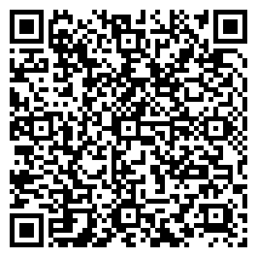

Sincronize suas câmeras pelo áudio
Arraste os vídeos e os áudios dos gravadores, clique em sincronizar e exporte um XML pronto para o Premiere Pro ou o DaVinci Resolve.
⬇ Baixar para MacComo funciona
Arraste os arquivos
Vídeos de todas as câmeras e os áudios dos gravadores, tudo de uma vez.
Sincronize
O programa compara o áudio e o horário das câmeras e encontra a posição de cada clipe.
Exporte o XML
Importe no Premiere ou no DaVinci com a timeline montada e as câmeras coloridas por grupo.
Vídeo: MOV MP4 MXF MTS AVI MKV ·
Áudio: WAV BWF MP3 AIFF M4A FLAC
Instalação
1. Abra o .dmg
Arraste o Mesquiatti Sync para a pasta Aplicativos.
2. Primeira abertura
Clique com o botão direito no app e escolha Abrir. Depois disso, ele abre normalmente.
Se o Mac disser que o app não pode ser aberto, vá em Ajustes do Sistema → Privacidade e Segurança e clique em Abrir Mesmo Assim.
♥ Apoie o projeto
O Mesquiatti Sync é gratuito e vai continuar sendo. Se ele economiza horas da sua edição, considere apoiar o desenvolvimento com uma doação de qualquer valor.

Recebedor: Marcelo Denison Mesquiatti · Bauru, SP
Abra o app do seu banco, escolha Pix e leia o QR Code ou cole o código. Qualquer valor ajuda.